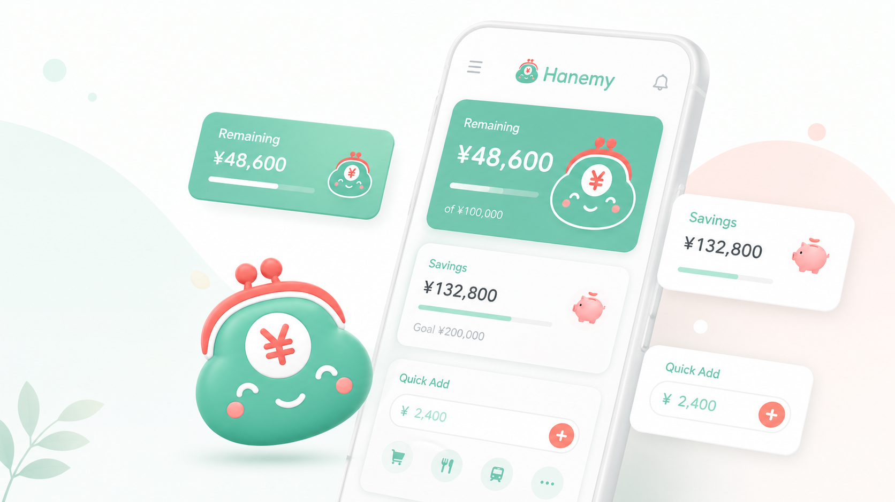

細かい入力が続かない
レシート単位で管理するのは重い。ハネミーは、使った分をざっくり足すだけです。
大学生のための生活費ボード
ハネミーは、細かい支出を毎日記録するためのアプリではありません。 月末まで生活費が持つかを、スマホで軽く確認するための判断支援アプリです。
ログインなし / 端末内保存 / β版公開中

WHY HANEMY
レシート単位で管理するのは重い。ハネミーは、使った分をざっくり足すだけです。
残りのお金と日数を見て、今のペースで大丈夫かを判断できます。
内訳を見せすぎず、生活費の状況だけを共有できるカードを作れます。
FEATURES
収入と固定費を入れると、生活費として使える残りをすぐに確認できます。
カテゴリを選んで、500円・1000円単位で軽く入力。家計簿のような細かさは求めません。
月をまたぐと、残った生活費は貯蓄として積み上がります。使いすぎた場合は勝手に貯蓄を削りません。
細かい内訳を隠して、生活費の状態だけを自然な文言で共有できます。
PROMISE
お金の不安を扱うアプリだから、ユーザーの不安を煽る設計には寄せません。
PUBLIC BETA
まだ改善中のβ版です。まずは、自分のスマホで開いて 「今月あといくら使えるか」がすぐ分かるかを試してください。